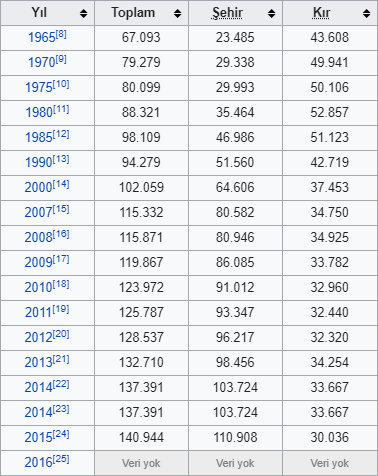

Kastamonu, Türkiye Cumhuriyeti'nin Karadeniz Bölgesi'nde yer alan Kastamonu ilinin merkez şehridir. Gökırmak'ın bir kolu olan Karaçomak Deresi vadisinde kurulu bulunan şehrin denizden yüksekliği 774 metredir. Evliyalar şehri olarak da bilinen Kastamonu Anadolu'daki en eski şehirlerden biridir, antik çağ ve Türk-İslâm dönemine ait birçok tarihi eser vardır. Kastamonu Kalesi, Atabey Camii, Şeyh Şaban-ı Veli Türbesi, Yanık Sultan Türbesi, Nasrullah Camii, saat kulesi ve buna benzer birçok tarihi eser mevcuttur. Çivisiz yapı mimari olarak yapılan Mahmut Bey Camii de buradadır. Kastamonu kent merkezinde ayrıca Türkiye'de açılan ilk "Kent Tarihi Müzesi" bulunmaktadır. Kastamonu Saat Kulesi, Sultan II. Abdülhamit zamanında, şehrin doğusunda bulunan yamaç üzerine Kastamonu Valilerinden Abdurrahman Nureddin Paşa tarafından 1884-1885 yıllarında yaptırılmıştır. Kulenin saati de Avrupa'dan getirtilmiştir. Kastamonu'da yapılan çekme helvası tüm ülke içinde meşhurdur.
İklim
İlde iki çeşit iklim hüküm sürer. Kuzeyinde Karadeniz iklimi güneyinde ise İç Anadolu'nun kara iklimi görülür. Kıyıya paralel olarak uzanan İsfendiyar Dağları, Karadeniz ikliminin iç kısma girmesini önler. Kıyılarda yağış daha fazladır. Senede 20 gün kar yağar, 40 gün toprak karla örtülüdür. Sıcaklık -26,9° ile +38,7 °C arasında seyreder. Senelik yağış miktarı bölgelere göre 450 mm ile 1215 mm arasında değişir.
Bitki Örtüsü
İl bitki örtüsü bakımından çok zengin sayılır. İl topraklarının % 67’si orman ve fundalıklarla, %29’u ekili-dikili alanlarla, %6,5’i çayır ve meralarla kaplıdır. %1,5'i tarıma elverişsiz topraklardır. Ormanlarda kayın, köknar, çam, karaağaç, gürgen, kestane ve ıhlamur ağaçları bulunur. Azdavay-Devrekâni arasında ise çam ağaçları çoğunluktadır.
Spor
Bu maddedeki bilgilerin doğrulanabilmesi için ek kaynaklar gerekli. Lütfen güvenilir kaynaklar ekleyerek maddenin geliştirilmesine yardımcı olun. Kaynaksız içerik itiraz konusu olabilir ve kaldırılabilir.
Kaynak ara: "Kastamonu" – haber · gazete · kitap · akademik · JSTOR (2020) (Bu şablonun nasıl ve ne zaman kaldırılması gerektiğini öğrenin)
Kastamonu'da birçok ilçenin kendine özel futbol ve hentbol takımları bulunmaktadır. Özellikle hentbolda Bayanlar Süper Liginde 1 takımı Bulunmaktadır. Bunun dışında ilin profesyonel tek futbol takımı Kastamonuspor 1966 üst üste iki kez şampiyon olarak Bölgesel Amatör Ligden, 3.Lig 3.Gruba ve daha sonra da 2. Lig Kırmızı Gruba yükselmiştir. 2019-2020 sezonunda sponsorluk anlaşması gereği takımın adı GÜN MEDYA GRUP KASTAMONUSPOR olmuştur. Ayrıca Bölgesel Amatör Ligde'de ili Kastamonu İl Özel İdare temsil etmektedir.
Nüfus

Bir görüşe göre Kastamonu şehri ismini, Hitit döneminde aynı bölge için kullanılan Kastama isminden almıştır. Kastama ismi zamanla Kastamonu'ya dönüşmüştür. Bir başka görüşe göre Kastamonu şehri ismini, Gas ve Tumanna kelimelerinin birleşiminden almıştır. Gaslar ya da bilinen adıyla Kaşkalar Kastamonu'nun ilk yerleşimcilerindendir. Tumanna ise o dönemde Kastamonu üzerinde bulunan bir şehir/bölge ismidir. Bu iki kelimenin birleşimi, zamanla Kastamonu şeklini almıştır. Üçüncü bir görüşe göre ise Kastamonu şehri ismini, Kastra ve Komnen kelimelerinin birleşiminden almıştır. Kastra kelimesi Latince "kale" demektir. Komnenler ise, bir Bizans Hanedanı olup bu bölgenin Bizans dönemindeki yerleşimcileridir. Bu iki kelime zamanla Kastamonu şeklini almıştır.